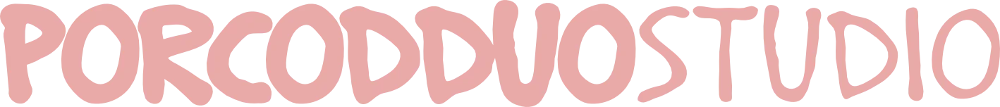
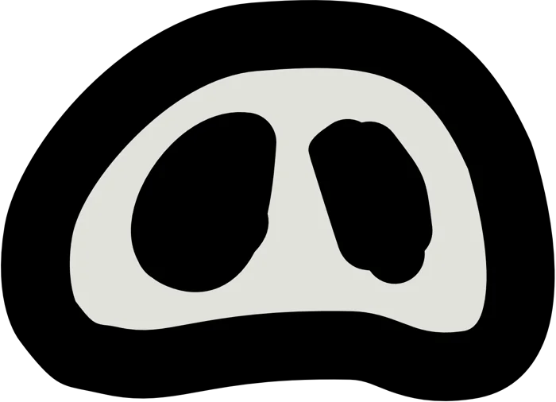
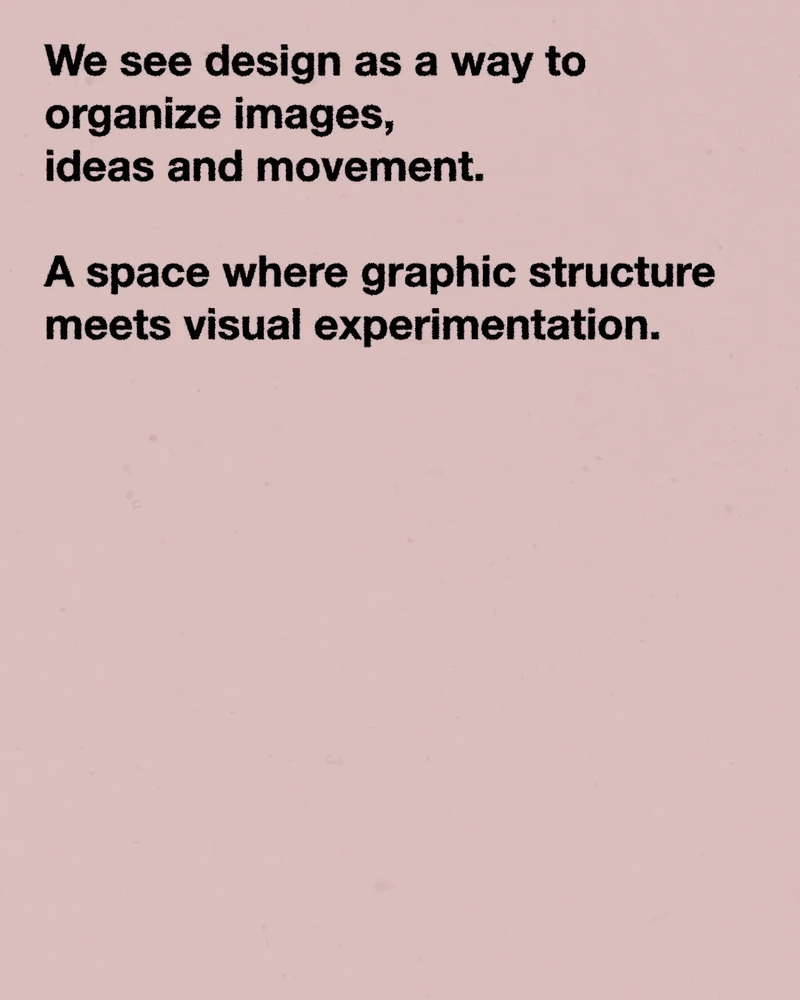
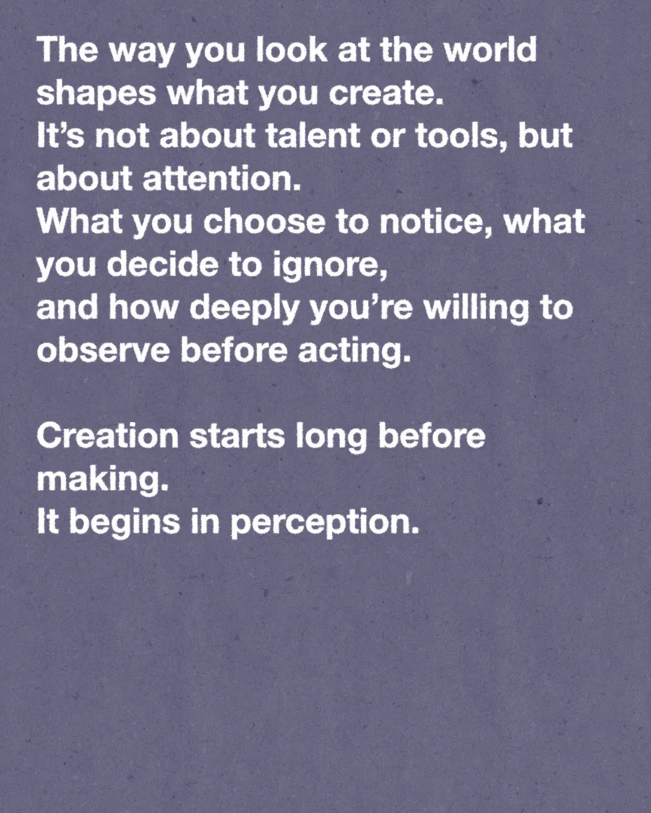
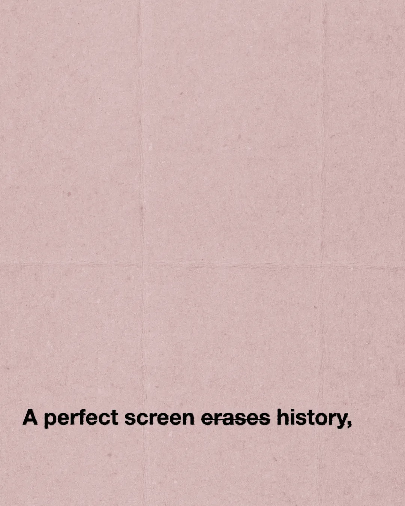

Studio di sperimentazione visiva · co-fondatore, con Filippo Di-Carlo

Uno studio di sperimentazione visiva nato in Accademia: grafica, mockup, 3D e video, tra glitch, scansioni e stampa.
Il manifesto
“We investigate the weight of the image in an increasingly weightless world.” Dal sito dello studio: un archivio aperto di estetiche non filtrate, dove glitch, scansioni e stampa diventano strumenti per nuovi significati.
Marchio e post




Facciamo qualcosa insieme.